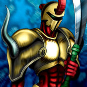

M-Warrior #2

Description: "When this card is flipped face-up, all M-Warrior #1s are increased 500 points."
STATS
ATK: 500
DEF: 1000DECK COST
Deck Cost per Card: 20EFFECT NOT IMPLEMENTED
Fusion List (53 Possible Fusions)
- M-Warrior #2 + Abyss Flower = Bean Soldier
- M-Warrior #2 + Ancient Jar = Minomushi Warrior
- M-Warrior #2 + Ancient Tree of Enlightenment = Bean Soldier
- M-Warrior #2 + Arlownay = Bean Soldier
- M-Warrior #2 + Armaill = Charubin the Fire Knight
- M-Warrior #2 + Armored Rat = Tiger Axe
- M-Warrior #2 + Bat = Cyber Soldier
- M-Warrior #2 + Blue-Eyed Silver Zombie = Zombie Warrior
- M-Warrior #2 + Charubin the Fire Knight = Flame Swordsman
- M-Warrior #2 + Clown Zombie = Armored Zombie
- M-Warrior #2 + Corroding Shark = Zombie Warrior
- M-Warrior #2 + Dancing Elf = Celtic Guardian
- M-Warrior #2 + Dark Plant = Bean Soldier
- M-Warrior #2 + Darkworld Thorns = Bean Soldier
- M-Warrior #2 + Dharma Cannon = Cyber Soldier
- M-Warrior #2 + Dragon Piper = Charubin the Fire Knight
- M-Warrior #2 + Dragon Statue = Dragoness the Wicked Knight
- M-Warrior #2 + Dragon Zombie = Sword Arm of Dragon
- M-Warrior #2 + Fire Eye = Charubin the Fire Knight
- M-Warrior #2 + Fire Reaper = Zombie Warrior
- M-Warrior #2 + Flame Ghost = Zombie Warrior
- M-Warrior #2 + Ganigumo = Cockroach Knight
- M-Warrior #2 + Graveyard and the Hand of Invitation = Zombie Warrior
- M-Warrior #2 + Griggle = Bean Soldier
- M-Warrior #2 + Haniwa = Minomushi Warrior
- M-Warrior #2 + Hinotama Soul = Charubin the Fire Knight
- M-Warrior #2 + Jinzo #7 = Cyber Soldier
- M-Warrior #2 + Leghul = Cockroach Knight
- M-Warrior #2 + Little Chimera = Tiger Axe
- M-Warrior #2 + Living Vase = Bean Soldier
- M-Warrior #2 + Magical Ghost = Armored Zombie
- M-Warrior #2 + Man Eater = Bean Soldier
- M-Warrior #2 + Mavelus = Flame Swordsman
- M-Warrior #2 + Mechanical Snail = Cyber Soldier
- M-Warrior #2 + Mechanical Spider = Cyber Soldier
- M-Warrior #2 + Milus Radiant = Tiger Axe
- M-Warrior #2 + Morphing Jar = Minomushi Warrior
- M-Warrior #2 + Muka Muka = Minomushi Warrior
- M-Warrior #2 + Mushroom Man = Bean Soldier
- M-Warrior #2 + Mystical Elf = Celtic Guardian
- M-Warrior #2 + One-Eyed Shield Dragon = Dragon Statue
- M-Warrior #2 + Petit Dragon = Dragon Statue
- M-Warrior #2 + Phantom Ghost = Zombie Warrior
- M-Warrior #2 + Rainbow Flower = Bean Soldier
- M-Warrior #2 + Shadow Specter = Zombie Warrior
- M-Warrior #2 + Sleeping Lion = Tiger Axe
- M-Warrior #2 + Two-Mouth Darkruler = Sword Arm of Dragon
- M-Warrior #2 + Wicked Dragon with the Ersatz Head = Dragon Statue
- M-Warrior #2 + Wing Egg Elf = Celtic Guardian
- M-Warrior #2 + Wings of Wicked Flame = Flame Swordsman
- M-Warrior #2 + Yamatano Dragon Scroll = Dragoness the Wicked Knight
- M-Warrior #2 + Yashinoki = Bean Soldier
- M-Warrior #2 + Zombie Warrior = Armored Zombie